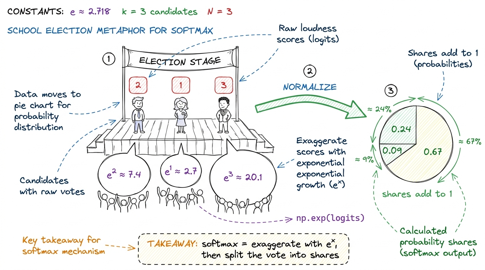
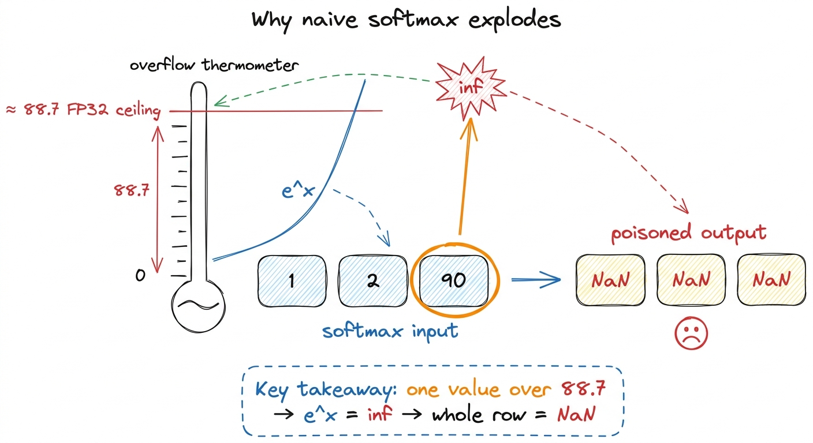
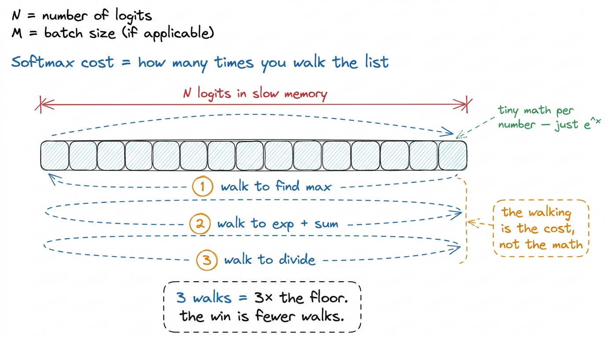
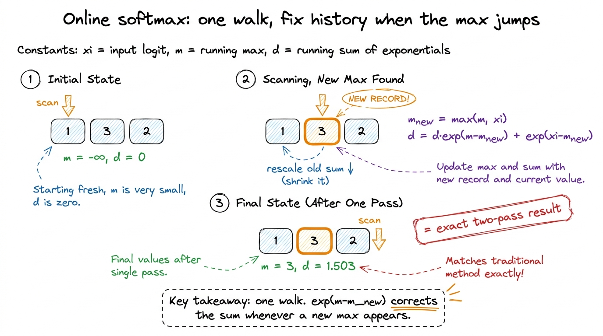
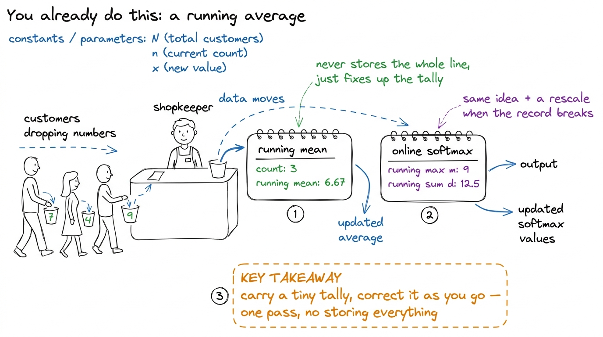
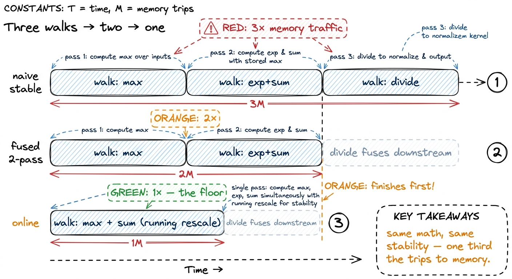

Teaching softmax & the online trick
By the end of this chapter you'll be able to stand at a whiteboard and teach softmax three times over — the naive version, the stable version that doesn't blow up, and the beautiful online version that computes everything in a single walk — so clearly that your students will see, with their own eyes, the exact trick that makes FlashAttention possible. We start from zero. Just a short list of numbers, a pencil, and a running tally.
This chapter ends with a genuine "wait, that's clever" moment. Your job is to earn it slowly — one number at a time.
What softmax is, in plain words
Softmax takes a list of numbers — some big, some small, some negative — and turns them into probabilities that add up to 1. Bigger inputs get bigger shares. That's the whole job. It's the last step of a classifier ("cat vs dog vs bird?") and the heart of every attention head ("how much should this word attend to each other word?").
The recipe is two steps. First, exponentiate every number — run each through e^x, which makes big numbers enormous and keeps everything positive. Then divide each result by the total, so the set sums to 1.

figure rendering · Softmax as a school election: exponentiate the scores into cheers, theThe tiny by-hand number
Do this one on the board first, before any formula. Take three logits: [2, 1, 3].
- Exponentiate:
e^2 = 7.39,e^1 = 2.72,e^3 = 20.09. - Add them up:
7.39 + 2.72 + 20.09 = 30.20. - Divide each by the total:
7.39/30.20 = 0.24,2.72/30.20 = 0.09,20.09/30.20 = 0.67.
Answer: [0.24, 0.09, 0.67]. They sum to 1. The biggest input (3) got the biggest share (0.67). Done.
Why the naive version explodes (the first plot twist)
Here's the naive code, exactly as a student would write it from the recipe:
def softmax_naive(x):
e = np.exp(x) # exponentiate everything
return e / e.sum() # divide by the totalCorrect on paper, a time bomb in practice. The problem is e^x grows insanely fast. In the standard 32-bit float a computer uses, e^x becomes inf — "infinity, too big to store" — the moment x passes about 88.7, and attention scores in real models routinely fly past that.
Once one number is inf, the sum is inf, and every share becomes inf / inf, which the computer reports as NaN — "not a number." One overgrown value poisons the entire row.
e^x blows past that ceiling fast." Draw a thermometer that maxes out at 88.7 with e^x shooting off the top into a red inf. The bug isn't in the idea; it's in the hardware's finite drawer of storage.
figure rendering · The naive bug drawn as a thermometer: exp overflows past ~88.7, and onThe fix: subtract the biggest number first
The rescue is one line, and it's exact — no precision lost, no approximation. Before exponentiating, find the biggest number in the row, call it m, and subtract it from everything. Now the largest value becomes 0, everything else is negative, and e^(negative) is always between 0 and 1. Overflow becomes structurally impossible.
Why is this allowed? Because subtracting a constant from every input doesn't change the answer at all. The same factor cancels out on the top and the bottom of the division. Show students the algebra once, slowly: e^(x−m) on top and e^(x−m) summed on the bottom — the hidden e^(−m) is in every single term, so it divides away.
e of a negative number is always small and safe. The shares come out identical — I've only moved the numbers, not their meaning."[2, 1, 3] the stable way on the board. Max is m = 3. Subtract: [−1, −2, 0]. Exponentiate: [0.37, 0.14, 1.00]. Sum: 1.51. Divide: [0.24, 0.09, 0.67]. Same answer as before — that's the whole point. It's the identical result, just computed without ever risking an overflow.Here's the stable version:
def softmax_stable(x):
m = x.max() # pass 1: find the biggest
e = np.exp(x - m) # pass 2: shifted exp, and their sum
return e / e.sum() # pass 3: divideNow count the trips to memory (the real lesson)
Here softmax stops being a math lesson and becomes a kernel engineering lesson. Count how many times the stable code walks over the list x:
- Once to find the max.
- Once to exponentiate and sum.
- Once to divide.
Three passes over the data. And here's the surprise: softmax does almost no arithmetic per number — just an exp and a couple of adds. It spends nearly all its time fetching numbers from memory, not computing. So on a GPU, the cost of softmax is basically "how many times did you walk the list?" Three walks means roughly three times the minimum time.

figure rendering · The stable softmax walks the list three times. On a memory-bound kerneFrom three walks to two
The easiest walk to delete is the third — the divide. Dividing each number by the total is pointwise: it looks at no other number, so it needs no walk of its own. It piggybacks on whatever step uses the softmax output next. In attention, softmax feeds straight into another matrix multiply, and the divide folds into the read that matmul already does. So honestly, softmax is two walks: one for the max, one for the exp-and-sum. This is the "safe softmax" good libraries ship.
But two walks still bothers a kernel engineer. The first walk reads every number just to extract one tiny fact — the max — then throws the data away. The second reads every number again. We loaded every byte twice. So the door-opening question is: can we find the max and the sum in one single walk — even though we don't know the max until we've seen the whole list?
It sounds impossible: the sum depends on the max, and you don't know the max until the end. That tension is the crux, and cracking it is the payoff of the chapter.
The online trick: keep a running tally and fix it up
Here's the idea, and it's the emotional peak of the lesson. Walk the list once, left to right. Keep two running values as you go:
m— the biggest number seen so far (not the final max, just so far).d— the running sum ofe^(x − m), for everything seen so far, measured against the current running max.
The magic is what happens when you hit a number bigger than any before. Your running max jumps up. But every term already in your sum d was measured against the old, smaller max — they're all now slightly too big. So you rescale the whole sum by one correction factor, then add the newcomer:
m_new = max(m, x_i) # did the record change?
d = d * exp(m - m_new) + exp(x_i - m_new) # rescale history, add newcomer
m = m_newThat d * exp(m - m_new) is the entire trick. When no new record is set, m - m_new = 0, the factor is exp(0) = 1, and it degenerates to a plain running sum. When a new record is set, the factor is less than 1, and it shrinks every previously-counted term into the new reference frame — exactly as if you'd known the new max all along.
[1, 3, 2] by hand, one number at a time, so students see the rescale fire. Start m = −∞, d = 0. • See 1: m = 1, d = 0·(…) + e^0 = 1. • See 3 (new record!): m_new = 3. Rescale: d = 1·e^(1−3) + e^(3−3) = 1·0.135 + 1 = 1.135. Set m = 3. • See 2 (no record): d = 1.135·e^(3−3) + e^(2−3) = 1.135 + 0.368 = 1.503. Final m = 3, d = 1.503. Check against the two-pass answer: e^(−2)+e^0+e^(−1) = 0.135+1+0.368 = 1.503. Identical. The rescale on the 3 is the moment to point at and say "there — it just fixed history."
figure rendering · The online update in three beats: carry a running max and sum, and eveHere's the whole thing as a loop — the reference version to show right after the by-hand run:
def softmax_online(x):
m = -np.inf # running max
d = 0.0 # running sum, relative to current m
for xi in x: # ONE walk
m_new = max(m, xi)
d = d * np.exp(m - m_new) + np.exp(xi - m_new)
m = m_new
return np.exp(x - m) / d # pointwise divide, folds downstreamOne walk to get both the max and the sum. The final divide is the pointwise tail we already agreed rides along with the next kernel. So online softmax is one walk plus a free tail — the fewest possible trips to memory for a stable softmax.
1 This is exact, not approximate. After the whole list, d equals the true sum against the final max, down to the last bit — identical to the two-pass answer. The rescale just spreads the max-subtraction across the walk instead of doing it all at the end.
Teach it as a running average
Students already know one "fix it up as you go" pattern: a running average. You keep a mean, and each new number nudges it — you never store the whole list. Online softmax is the same shape of idea — a running tally you correct as new data arrives — except the correction is a multiply (the rescale) instead of a nudge. Anchor the trick to that familiar feeling: "you already trust running averages; this is a running sum that also rescales when the reference point moves."

figure rendering · The mental anchor: online softmax is a running tally, just like a runn[2,1,3] — it works. (2) Break it: swap in a 90, watch it NaN. (3) Fix with subtract-the-max — same answer, safe. (4) Count the walks: three, then two. (5) Pose the impossible question — "one walk?" — and pause. Let them feel it's impossible. (6) Reveal the running max + rescale, run [1,3,2] by hand, and land on "identical answer, one walk." The pause before step 6 is what makes the reveal hit. Don't rush it.Where this lives in production
Now the punchline. This exact trick is the beating heart of FlashAttention — the kernel inside essentially every large model served today, from Llama to DeepSeek to ChatGPT. Attention must softmax a row of scores far too big to hold in fast memory at once, so it streams them through in tiles. Which means it can never do a two-pass softmax — it never sees the whole row before it must start accumulating results.
The online trick rescues it. FlashAttention keeps a running max, a running sum, and a running output — and every time a new tile pushes the max higher, it rescales the partial output by the same exp(m − m_new) factor you just taught. Softmax and the value-multiply fuse into one streaming pass that never writes the giant score matrix to memory at all.

figure rendering · The whole optimization in one picture: identical output and identicalYou can now teach
- What softmax is — exaggerate scores with
e^x, then divide into shares that sum to 1 — with a clean by-hand[2,1,3]example. - Why the naive version explodes —
e^xoverflows past ~88.7 and one infinity turns the whole row toNaN— and the exact subtract-the-max fix, shown to be the identical answer. - Why softmax is a memory problem, not a math problem — that the number of walks over the list, not the arithmetic, sets the cost.
- The online trick — a single walk carrying a running max and a running sum, rescaling history by
exp(m − m_new)whenever a new max appears — taught as a running average, with a by-hand[1,3,2]that matches the two-pass answer exactly. - The board sequence — naive → break it → fix it → count the walks → pose the "one walk?" impossibility → reveal the rescale — and the pause that makes the reveal land.
- The production hook — that this exact rescale is FlashAttention's inner loop, the reason modern context windows are huge, and why fewer memory walks is worth a fortune.